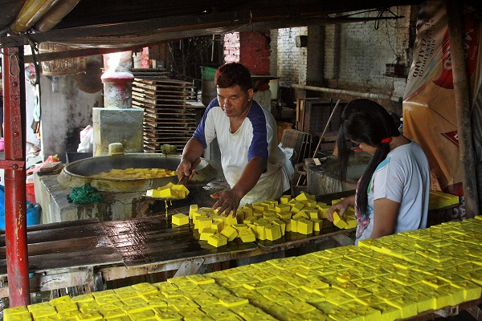
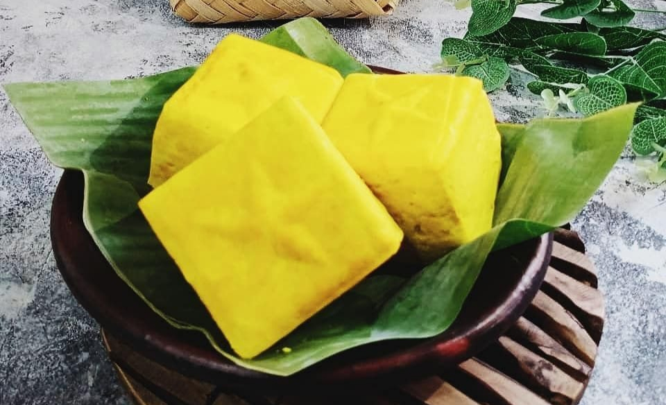
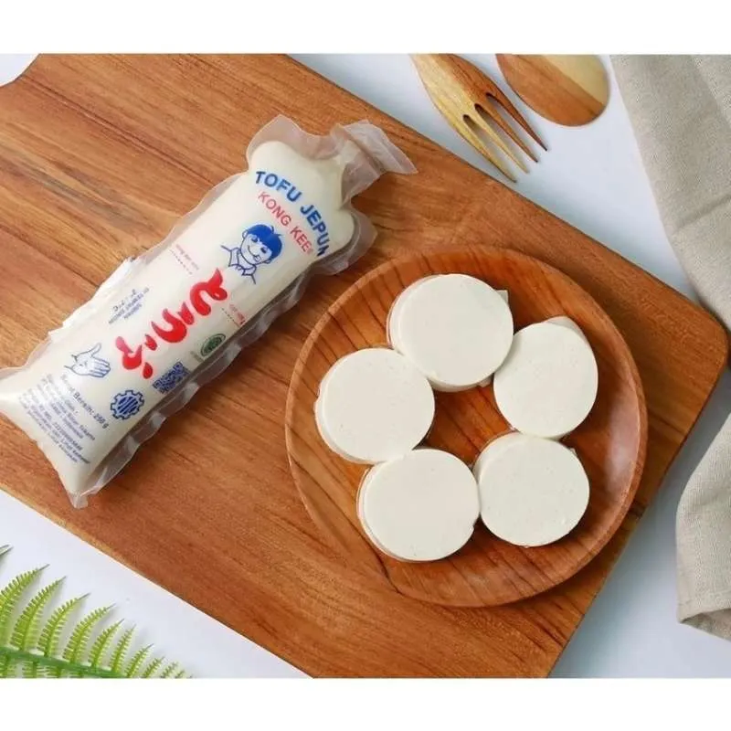
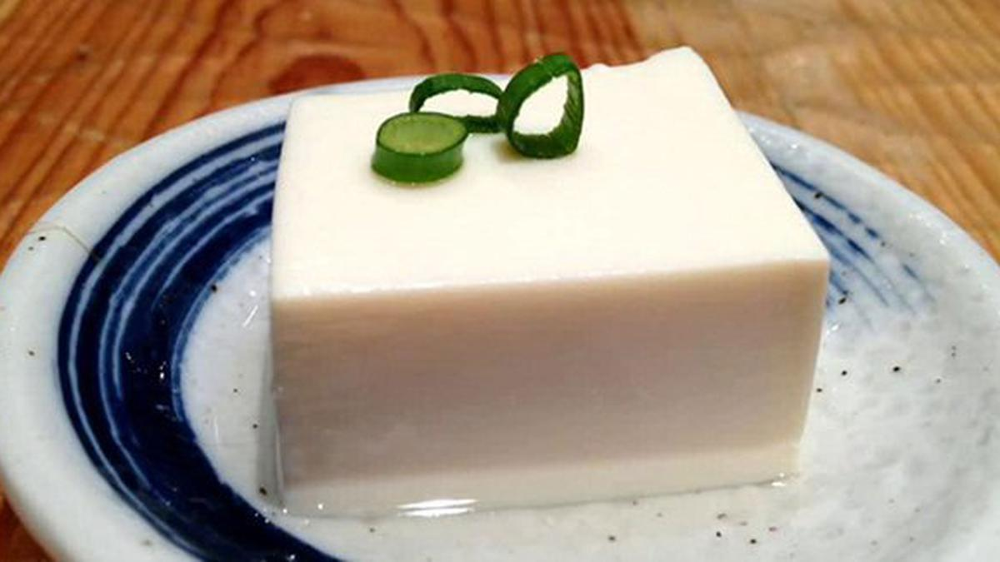
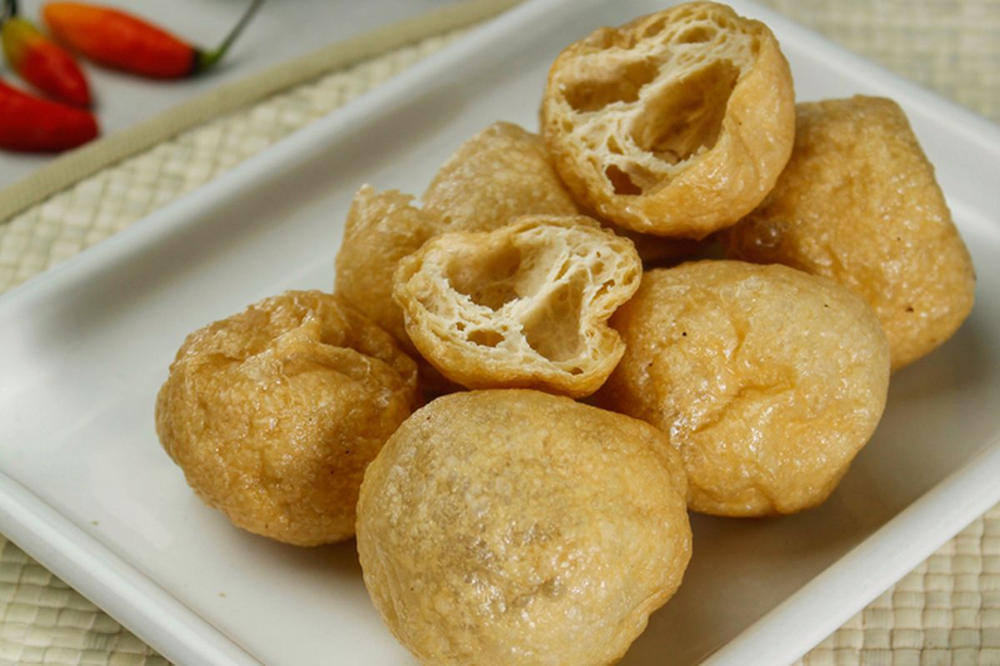

Kualitas Terjamin
Produksi diawasi dengan standar higienis untuk menjaga tekstur dan rasa tahu tetap sempurna.
Produksi Harian
Tahu selalu dicetak segar setiap hari sehingga sampai ke tangan konsumen dalam kondisi optimal.
Harga Kompetitif
Menawarkan harga pabrik yang sangat terjangkau, cocok untuk mitra usaha katering dan restoran.
Tentang Kami
Dedikasi dan Inovasi dalam Memproduksi Tahu Nusantara

Pusat Produksi Tahu Terbaik di Yogyakarta.
UD. Selera Rasa telah lama melayani masyarakat luas dalam pemenuhan kebutuhan protein nabati berkualitas dari bahan dasar kedelai segar.
- Menggunakan kedelai impor maupun lokal kualitas nomor satu untuk memastikan gizi optimal.
- Memiliki berbagai lini produk sesuai kebutuhan: Tahu Kuning, Tahu Putih, Tahu Sutra, hingga Tahu Goreng siap pakai.
- Menerapkan standar manajemen mutu secara konsisten di setiap tahapan produksi, mulai dari perendaman, penggilingan, hingga pencetakan.
Kami mengerti bahwa tahu merupakan lauk pokok dan bahan dasar krusial bagi berbagai masakan Indonesia. Oleh karena itu, kami selalu berinovasi menjaga tradisi cita rasa agar kepuasan pelanggan, baik skala rumah tangga maupun industri kuliner, selalu menjadi yang utama.
Sejarah Perusahaan
Perjalanan panjang pelestarian cita rasa dari generasi ke generasi
Kisah UD. Selera Rasa bermula pada tahun 1982. Saat itu, usaha ini hanyalah sebuah industri rumahan berskala kecil yang tersembunyi di pelosok daerah Gunung Kidul. Dengan alat seadanya dan tenaga yang terbatas, sang pendiri mulai meracik tahu menggunakan resep tradisional keluarga, perlahan memasarkannya ke pasar-pasar tradisional terdekat. Ketekunan, kerja keras, serta komitmen untuk tidak pernah mengorbankan kualitas membuat tahu olahan rumah ini cepat merebut hati masyarakat sekitar berkat teksturnya yang lembut dan cita rasa kedelai yang otentik.
Seiring berjalannya waktu dan meningkatnya permintaan pasar, estafet kepemimpinan pun berlanjut. Kini, di bawah pengelolaan generasi ketiga, UD. Selera Rasa telah bertransformasi secara luar biasa. Apa yang dulunya hanyalah industri dapur kecil di pelosok, kini telah berkembang menjadi sebuah perusahaan terkemuka yang memiliki fasilitas pabrik megah dan modern di kawasan Sleman, Yogyakarta.
Pabrik kami saat ini telah dilengkapi dengan teknologi produksi mutakhir, sistem pengolahan limbah yang ramah lingkungan, serta standarisasi kebersihan yang ketat. Meskipun telah jauh berkembang dan memodernisasi cara kerja, UD. Selera Rasa tidak pernah melupakan akar sejarahnya. Kami terus mempertahankan resep warisan leluhur tahun 1982, demi menyajikan tahu yang bukan saja bergizi, melainkan juga kaya akan kenangan dan kehangatan nusantara.
Struktur Organisasi
Susunan manajerial dan operasional di balik kesuksesan UD. Selera Rasa

Bagan Struktur Organisasi UD. Selera Rasa
Keunggulan Kami
Alasan mengapa UD. Selera Rasa adalah mitra terbaik untuk kebutuhan Anda
Bahan Baku Unggulan
Kedelai dipilih melalui proses sortir ketat guna menjamin kualitas sari kedelai yang padat dan kaya gizi.
Kapasitas Besar
Fasilitas industri kami mampu memproduksi tahu dalam jumlah besar setiap hari untuk menjaga stabilitas stok.
Distribusi Lancar
Memiliki armada mandiri sehingga pengiriman ke pasar maupun restoran dilakukan tepat waktu sesuai jadwal operasional Anda.
Ragam Varian
Tidak hanya satu jenis, kami melayani permintaan tahu bertekstur padat hingga sangat lembut (sutra).
Layanan Ramah
Tim admin kami siap melayani pesanan Anda dengan responsif dan fleksibel sesuai kebutuhan porsi/kemasan.
Kebersihan Area
Kami menjaga sanitasi pabrik guna memastikan seluruh limbah dan proses produksi berjalan ramah lingkungan.


Layanan Kami
Solusi kebutuhan tahu untuk berbagai segmen pasar
Grosir Pasar Tradisional
Pasokan rutin setiap pagi untuk pedagang pasar, menjamin ketersediaan tahu segar dengan harga agen.
Suplai Restoran & Katering
Melayani pesanan dengan spesifikasi khusus (tekstur dan ukuran) yang ideal bagi kebutuhan dapur komersial Anda.
Tahu Cetak Khusus
Tersedia layanan penyesuaian cetakan maupun ketebalan tahu sesuai dengan permintaan masakan tertentu.
Layanan Pengiriman
Pesanan kami antar langsung ke lokasi usaha Anda dengan sistem pengiriman yang aman dari risiko hancur.
Program Mitra Reseller
Peluang kerjasama bagi Anda yang ingin menjadi distributor atau agen penjualan produk UD. Selera Rasa.
Penjualan Eceran Pabrik
Bagi warga sekitar, kami melayani pembelian tahu segar langsung dari pabrik dalam jumlah rumahan.
Pesan Tahu Berkualitas Hari Ini!
Jadilah mitra UD. Selera Rasa dan dapatkan jaminan kualitas tahu premium untuk setiap hidangan. Klik tombol di samping untuk terhubung dengan layanan pelanggan kami.
Produk Kami
Kenali aneka varian tahu olahan berkualitas unggul dari pabrik kami
- Semua Produk
- Tahu Putih
- Tahu Kuning
- Tahu Sutra
- Tahu Goreng

Tahu Putih Segar
Bertekstur padat dan lembut, cocok untuk masakan rumahan


Tahu Kuning (Takwa)
Diolah dengan kunyit alami, memberi warna dan rasa gurih yang khas


Tahu Sutra (Silken Tofu)
Tekstur sangat lembut dan lumer, ideal untuk sapo tahu dan sup

Tahu Goreng Kulit
Sudah digoreng sempurna, siap diolah menjadi isian bakso atau tahu isi

Tahu Putih Cetak Besar
Ukuran jumbo untuk efisiensi katering dan hajatan atau konsumsi sehari-hari

Tahu Kuning Kotak Kecil
Varian porsi kecil yang praktis dikemas dan digoreng langsung


Tahu Sutra Cup
Pengemasan modern yang higienis, menjaga kualitas tahu tetap sempurna


Tahu Pong / Kopong
Bagian dalam berongga, sering digunakan untuk tahu gejrot
Kontak Kami
Kunjungi pabrik kami atau hubungi kontak di bawah untuk pertanyaan seputar produk dan pemesanan
Alamat
Jl. Babarsari Jl. Tambak Bayan No.2, Janti, Caturtunggal, Kec. Depok, Kabupaten Sleman, Daerah Istimewa Yogyakarta 55281
Telepon / WhatsApp
+62 877-7591-2724
bagasnurrahmanzaki@gmail.com